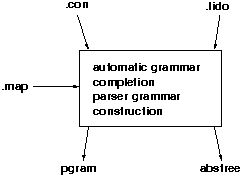

Eli deduces the correspondence between the concrete and abstract syntaxes based on the user specifications in .con, .lido and .map files.

Typical Error Situation
Often caused by typing mistakes:
.map: MAPSYM a_or_b : a b.
.con: x : a b.
.lido: RULE: x ::= a_or_b ',' a_or_b END;
This .lido rule does not match a concrete grammar rule. It is added to the parsing grammar.
==> a_or_b is considered to be a terminal.
==> ERROR: No GLA specification for a_or_b
Back to Typical Eli Errors %FOOT%